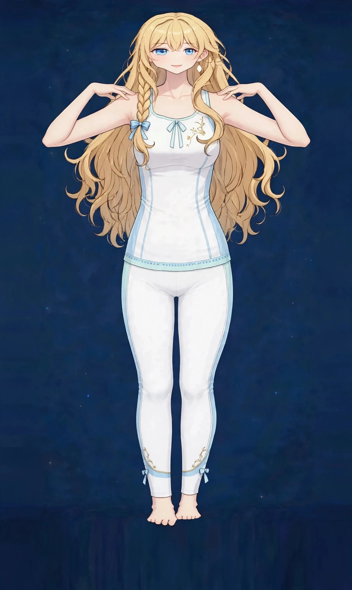

梅田で寒い日の肩こりケア｜寒さでこわばる肩に疲労・張り

寒い日は、無意識に肩をすくめていませんか。外を歩く数分で肩が固まり、室内に入ってもなかなかほぐれない——寒い日の肩のこわばりは、寒さへの防御反応が肩の緊張として残るお悩みです。
寒い日の肩のこわばりはどんな状態か
寒い日の肩のこわばりは、寒さから体を守るために肩をすくめる姿勢が繰り返され、肩まわりの筋肉が縮んだまま固まってしまう状態です。肩を耳に近づける「すくめ」は、首・肩・背中の広い範囲の筋肉を同時に緊張させます。
ポイントは、寒さへの反応は無意識だということです。本人は力を入れている自覚がないまま、通勤や買い物のたびに肩をすくめています。さらに冬はコートの重さや、厚着による動きにくさも重なり、肩への負担は夏より確実に増えます。温かい場所で「すくめを下ろす」ことが、こわばりをほどく入口になります。
こんなサインはありませんか？ — 寒い日の肩のこわばりのチェックリスト
- 寒い日は決まって肩が重くなる
- 外を歩くと無意識に肩が上がっている
- 冬になると肩こりの程度が一段強くなる
- コートを脱ぐと肩の重さを実感する
- 朝の冷え込みの時間帯に首・肩が固い
- 首元が開いた服の日は特にこわばる
- 寒い日の翌日まで肩の張りが残る
- 手先の冷えと肩のこわばりを一緒に感じる
当てはまる項目が多いほど、負担がたまりやすい生活が続いている可能性があります。次の「要因」と見比べて、どこに負担が集まっているか確かめてみてください。
寒い日の肩のこわばりにつながりやすい要因
- すくめ姿勢の繰り返し：寒さを感じると体は熱を逃がさないよう縮こまります。肩のすくめはその代表で、繰り返されるたびに筋肉は縮んだ位置で固まっていきます。
- 首元の冷え：首元は太い血管が通る場所で、ここが冷えると全身の冷え感も強まります。マフラー一枚の有無が、肩のこわばりの程度を変えます。
- 冬服の重さ：コートや厚手のニット、バッグの重さは、夏より肩への荷重を増やします。重い服の日ほど肩が重くなるのは、単なる気分ではありません。
- 室内外の温度差：暖かい室内と寒い屋外を行き来する日は、体が緊張と緩和を繰り返します。調整に追われる体は、肩に力を残しやすくなります。
- 運動量の低下：寒い日は外出や歩行が減り、肩を大きく動かす機会も減ります。動かさない肩は、こわばったまま固定されやすくなります。
- 血行の巡りの低下：寒さで末端の巡りが落ちると、筋肉の回復も遅くなります。冷え性の方ほど、冬の肩こりが長引きやすい傾向があります。
図1｜寒さでこわばりやすい肩まわりの筋肉（背面）

東洋医学から見た考え方
東洋医学では、寒さは「寒邪（かんじゃ）」と呼ばれ、体を縮こまらせ、巡りを滞らせる性質があると考えます。寒い日に肩がこわばる感覚は、この見立てとよく合います。対策の中心は、温めて巡らせることです。
肩から首にかけては胆経のラインが通り、背中には膀胱経が広く通ります。施術では肩・首・背中を温めながらほぐし、寒さで滞った巡りを意識してケアします。
代表的なツボ
寒い日の肩のこわばりのケアでよく挙げられる、肩まわりのツボを紹介します。温めながら触れることで、こわばりがゆるみやすい場所です。
図2｜肩まわりのツボの位置（背面）
おすすめ施術
美容整体＋オイルマッサージ
首・肩・背中を温めながらほぐし、寒さで縮こまった筋肉のこわばりをゆるめます。施術室を温かく整え、体が「すくめを下ろせる」状態を作ることから始めます。
進め方は、まず背中と肩の大きな筋肉をオイルで温めながらほぐし、首の付け根まで進む流れです。冬服の重さで負担が増えた肩先まで、丁寧にケアします。
首元の冷え対策や、冬の服装の工夫もお伝えします。本格的に寒くなる前の時期から整えておくと、真冬のこわばりの出方が変わることも期待できます。
冬の肩のこわばりは、寒さが本格化する前からの備えで変わります。首元を守る服装と、温める習慣を早めに始めることに加え、秋のうちに一度肩まわりをほぐしておくと、真冬のこわばりの出方を比べやすくなります。寒い時期は、体の温かさを保つことそのものが、日々の負担を減らす土台になります。
自宅でできるセルフケア
寒い日のセルフケアは「首元を守る・温める・すくめを下ろす」の組み合わせが基本です。肩の痛みにしびれを伴う場合や、腕が上がりにくくなってきた場合は、医療機関にご相談ください。
- 1．マフラーやストールの習慣外出時は首元を覆うことを習慣にします。首元を守ることは、肩のすくめを減らす最も簡単な対策です。
- 2．肩のすくめ下ろし室内に入ったら、両肩を一度すくめてからストンと下ろします。こわばりを自覚してほどく、小さなリセットです。
- 3．蒸しタオルで肩を温める帰宅後、蒸しタオルを両肩にのせて5分ほど温めます。温めることで巡りが促され、こわばりがゆるみやすくなります。
- 4．湯船で首までつかる冬の入浴は湯船で肩までつかることを意識します。シャワーだけの日が続くと、こわばりは抜けにくくなります。
図3｜セルフケア「肩のすくめ下ろし」の手順
場面別の注意
通勤や買い物の外出時
外に出る前に首元を整え、歩くときは時々肩を下ろす意識を持ちます。数分の外出でも、すくめは積み重なります。
真冬の朝
朝の冷え込みが厳しい日は、首・肩の固さも強くなります。起床後の蒸しタオルで温めてから一日を始めてください。
年末年始の忙しい時期
冬の行事が重なる時期は、寒さと疲れが重なります。予定の合間に施術を入れる使い方もおすすめです。
受診の目安
次のような場合は、サロンでのケアの前に医療機関への受診をおすすめします。
- 肩の痛みに加えて、腕や手にしびれがある
- 肩が痛くて腕が上がらなくなってきた
- 発熱を伴う首・肩の痛みがある
- 転倒や事故のあとから症状が始まった
- 痛みが日に日に強くなっている
当店は医療機関ではなく、診断は行いません。迷うときは、まずかかりつけの医療機関にご相談ください。
よくある質問
Q．普通の肩こりのページとの違いは？
肩こりのページは肩こり全般を、このページは「寒い日・冬」という条件に絞り、すくめ姿勢や首元の冷えとの関係を中心に解説しています。季節で程度が変わる方は、こちらのページが合います。
Q．冬だけ通う形でもいいですか？
はい。寒い時期に絞って定期的に使う方もいらっしゃいます。真冬に入る前の時期から始めると、こわばりの出方の変化を比べやすくなります。
Q．施術室は寒くないですか？
施術中は体が冷えないよう室温とタオル掛けに配慮しています。寒さが気になる場合は、当日お伝えいただければ調整します。
Q．カイロを貼る場所のおすすめは？
肩のツボに直接より、首の付け根や肩甲骨の間など、大きな筋肉の上を温める使い方をお伝えしています。低温やけどを避けるため、肌への直接貼付は避けてください。
関連するお悩みページ
関連する経絡ページ
ご予約
ステラポラリス（大阪・梅田／女性専用）｜オイルマッサージ 90分 10,000円｜月〜土 17:00〜22:00・完全予約制
ご予約はLINE公式アカウントで受け付けています。希望の日時と、気になる場所を送ってください。